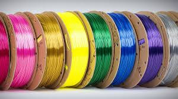
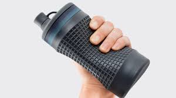

3D printers can take different types of materials, as long as the printer is compatable with the material and the temperature settings are adjusted appropriately. Most material types are plastic filaments, resins, or powders, although this guy used nutella. By printer compatablility, I mean that there are some printers, called FDM printers, which take spools of plastic filament, other printers, called SLA printers, which cure liquid resin, and a third type, SLS, which fuse powders into solid structures with a laser. This will focus on filament for FDM printers, since they are the most popular for casual/at home use.
The most popular filament, and the only type I've used with my personal 3D printer so far. Fairly cheap, melts at a low temperature, and is biodegradeable(in some situations). A pretty beginner-friendly material. However, it can warp with heat and is less durable than some other plastics.
Nozzle temperature: 190-230 degrees Celcius
Bed temperature: 50-60 degrees Celcius
Another popular choice and more durable, strong, and heat-resistant than PLA. However, it is more prone to warping, requiring a heated print bed. It is also smelly and breaks down in UV light.
Nozzle temperature: 220-260 degrees Celcius
Bed temperature: 90-110 degrees Celcius
Very strong and impact resistant, and is easier to print with than ABS. However, it may be difficult to remove support structures after printing and it is not very good at bridging, or laying down material without support underneath.
Nozzle temperature: 220-260 degrees Celcius
Bed temperature: 70-90 degrees Celcius
This is a rubbery filament with high flexability, used for prints that need to deform. With its flexibility however it is harder to print it precisely. It also absorbs water from the environment, so it requires proper drying and storage.
Nozzle temperature: 220-250 degrees Celcius
Bed temperature: 50-60 degrees Celcius
